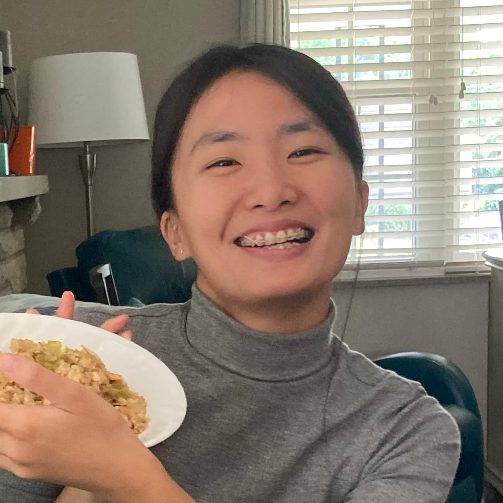
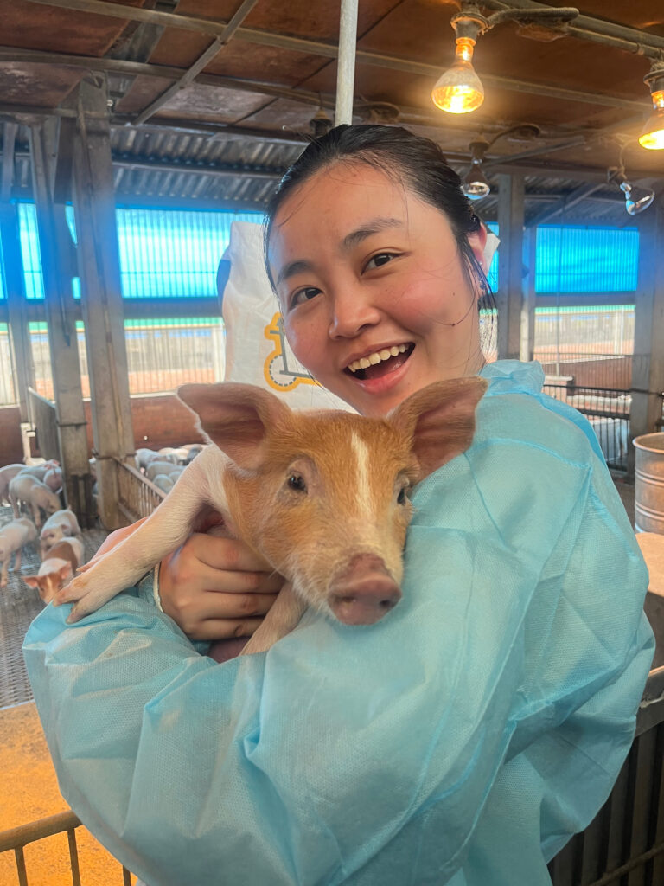

Team
The Chu Lab is based in the Department of Veterinary Pathobiology at Texas A&M University's College of Veterinary Medicine & Biomedical Sciences.
Principal Investigator

DVM, PhD, DACVP · Texas A&M University
cchu@cvm.tamu.edu
Veterinary artificial intelligence, digital cytology, diagnostic AI, large language models, and AI education.
Graduate Students & Research Assistants

Yumi earned her DVM from National Chung Hsing University in Taiwan. Her research applies large language models to extract structured clinical data from veterinary electronic health records; her first paper appeared in the Veterinary Pathology special issue on artificial intelligence in 2026.
Outside the lab Dog parent, home cook, and lifelong learner.

Avery earned her DVM from National Taiwan University and is pursuing a PhD in the Department of Veterinary Pathobiology at Texas A&M University. Her research focuses on microRNA biomarkers in chronic kidney disease.
Outside the lab Coffee, cooking, dogs, and Taiwanese bubble tea.
Franklin earned a bachelor's degree in chemistry with a minor in economics from National Taiwan University. His experience working with data led to a growing interest in computer science. His current work focuses on large language models and machine learning.
Outside the lab Learning Japanese, playing board games and piano, and developing his cooking skills.
Join the Lab
We recruit summer veterinary students, MS thesis and PhD students interested in applying AI to veterinary medicine. Prospective students should contact Dr. Candice Chu with their CV and transcripts before applying through the BIMS Graduate Program.
Our lab members present at national conferences, publish as first authors, and have the opportunity to attend clinical pathology and anatomic pathology rounds and even pursue residency training after graduation.